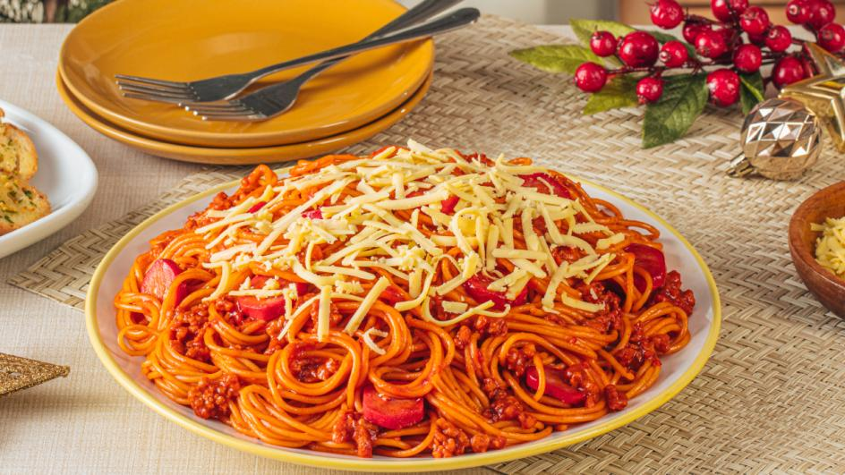

Description
Filipino spaghetti is a sweeter version of the classic Italian dish, known for its rich, meaty sauce with a touch of sweetness. It features banana ketchup, hotdogs, and ground meat, making it a favorite at Filipino parties and celebrations.
The sauce is served over spaghetti noodles and topped with grated cheese for a deliciously unique taste.
Ingredients
For the Sauce:
- 2 tablespoons oil
- 1 small onion, chopped
- 2 cloves garlic minced
- 500g ground pork or beef
- 4 hotdogs, sliced
- 2 cups tomato sauce
- 1/4 cup tomato paste
- 1/2 cup banana ketchup
- 2 tablespoons sugar
- 1 teaspoon salt
- 1/2 teaspoon black pepper
- 1/2 cup water
Others:
- 400g spaghetti noodles, cooked according to package instructions
- 1 grated cheese
Steps
- Cook the Meat Sauce – Heat oil in a pan over medium heat. Sauté onions and garlic until fragrant. Add ground pork or beef and cook until browned. Stir in sliced hotdogs and cook for 2 more minutes.
- Simmer the Sauce – Pour in tomato sauce, banana ketchup, and tomato paste. Add sugar, salt, black pepper, and water. Stir well and let it simmer for 15–20 minutes, stirring occasionally.
- Cook the Spaghetti Noodles – Boil water in a pot, add salt, and cook the spaghetti noodles according to the package instructions. Drain and set aside.
- Combine and Serve – Place cooked spaghetti noodles on a plate, pour the sweet-style sauce over them, and sprinkle grated cheese on top.
- Enjoy! – Serve warm and enjoy this Filipino-style spaghetti with family and friends. 😊